ほあんかん [梅吉]
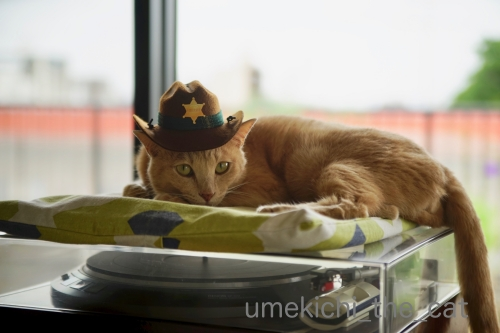
ほあんかんさん！事件・・・・・！！

![[猫]](https://blog.ss-blog.jp/_images_e/101.gif) なぬっ！
なぬっ！
・・・・が起きるかもしれませんよ。くつろぎすぎじゃないですか？
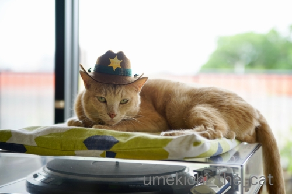
わしはいま せんしのきゅうそくちゅう やで
そうですか？休息しっぱなしのような気もしますけど。

先日はトンネルの窓からこんな足が見えたのでのぞいてみたら
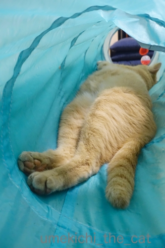
こんなんなって
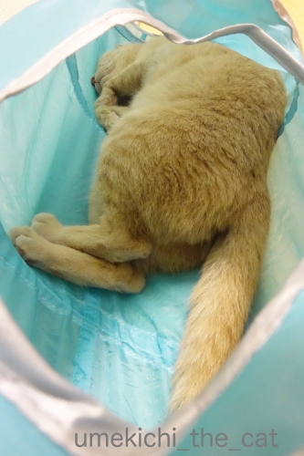
こんな感じでしたけど。
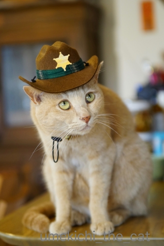
ちゃんとけいびも してるで うえよーし！
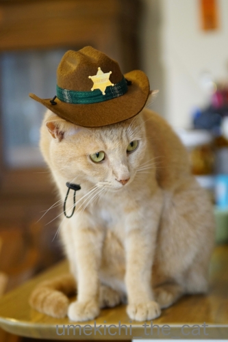
したもよーし！

げんかんほうめんもよーし！
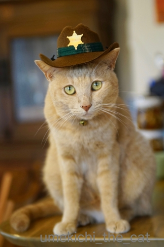
わし ちいきの ほあんかんやからな
はいはい＾＾引き続き地域の治安維持、お願いしますね！
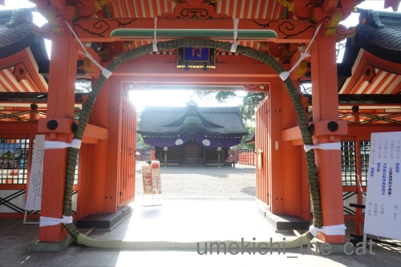
近所の大きい神社の夏越の祓の茅の輪。
門にくくりつけてあるので妙な形になってますが・・・www
この神社、宵宮から始まりただいまお祭り中です。
朝早い時間にささっとお参りしてきましたが
昼間・夜は人が凄すぎてとてもとても近寄れたものではありません。
本当にすごい人なんです；；
このお祭りが終わると神様もお疲れ様、の暑いだけの夏がやってきます。。。
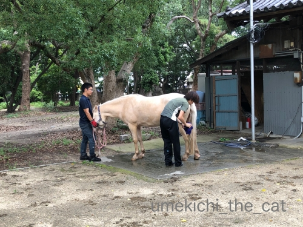
そうそう！神馬の白雪さんも来阪されてます。
それがですね・・・偶然沐浴中に通りがかって気づいたのですが
白雪さん、男子でした＞＜
私はあの麗しいお姿にずーっと女子だと思っていて・・・
以前の記事で女子だと思われた方もいらしたのではないでしょうか。
（神馬は男子じゃない？と察した方もいらっしゃったかな。）
記憶の修正をお願い致します。
白雪さんにも皆様にも大変失礼致しましたm(_ _)m
 ↑ガブッと一押し↑
↑ガブッと一押し↑
ほあんかんさん！事件・・・・・！！
・・・・が起きるかもしれませんよ。くつろぎすぎじゃないですか？
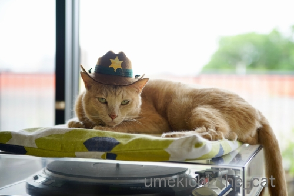
そうですか？休息しっぱなしのような気もしますけど。
先日はトンネルの窓からこんな足が見えたのでのぞいてみたら
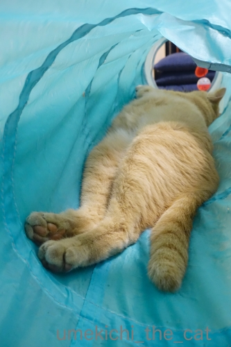
こんなんなって
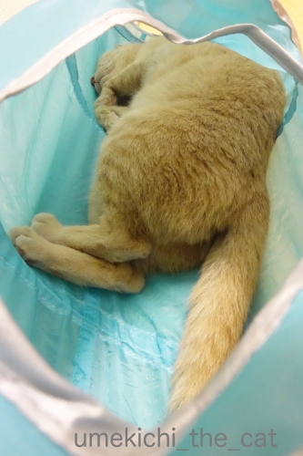
こんな感じでしたけど。
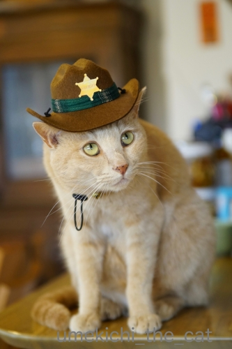
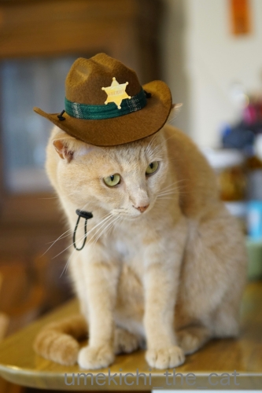
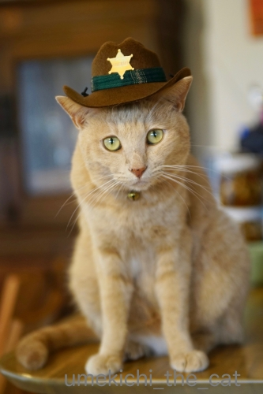
はいはい＾＾引き続き地域の治安維持、お願いしますね！
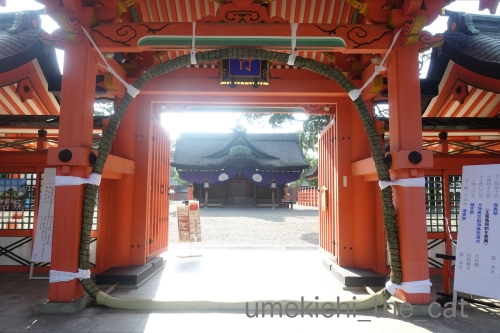
近所の大きい神社の夏越の祓の茅の輪。
門にくくりつけてあるので妙な形になってますが・・・www
この神社、宵宮から始まりただいまお祭り中です。
朝早い時間にささっとお参りしてきましたが
昼間・夜は人が凄すぎてとてもとても近寄れたものではありません。
本当にすごい人なんです；；
このお祭りが終わると神様もお疲れ様、の暑いだけの夏がやってきます。。。
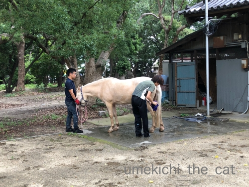
そうそう！神馬の白雪さんも来阪されてます。
それがですね・・・偶然沐浴中に通りがかって気づいたのですが
白雪さん、男子でした＞＜
私はあの麗しいお姿にずーっと女子だと思っていて・・・
以前の記事で女子だと思われた方もいらしたのではないでしょうか。
（神馬は男子じゃない？と察した方もいらっしゃったかな。）
記憶の修正をお願い致します。
白雪さんにも皆様にも大変失礼致しましたm(_ _)m

カフェオレ色の梅吉

梅吉 2023年8月10日 永眠


梅吉と出会った譲渡会

犬猫の理由なき殺処分ゼロ
妄想広告
UMEKICHI 光

爆発的に早い！
時々攻撃的！
Thanks to Mr.Boss365
爆発的に早い！
時々攻撃的！
Thanks to Mr.Boss365

保安官さん横顔もかっこいいです。
門にくくりつけてある茅の輪はどうやって通ればいいのかしら。
白雪さんは私も女の子だと思ってました。
by zombiekong (2019-08-01 01:24)
ポニーさんでも長かったですから
普通サイズのお馬さんだと・・・＾＾；
by ぽちの輔 (2019-08-01 06:05)
梅吉保安官今日もお仕事ご苦労様です。
なんて帽子が似合うんでしょう♪
猫頭にジャストフィットのサイズ、素晴らしいです。
大きい神社の茅の輪小さい神社のとくぐり方が違うのですかね。
白雪さん男の子だったのね(*^ｍ^)
by marimo (2019-08-01 06:55)
梅吉さん、ほあんかんの帽子お似合いです。
上手にかぶっていてえらいなぁ。
トンネルの中で伸びているあんよに萌え萌えです。
by ChatBleu (2019-08-01 06:56)
梅吉さん、警備お疲れ様です( ^ω^ )
梅吉さんが見守ってくれてると安心安全ですね=(^.^)=
トンネル内の梅吉さんポーズ、うちの大御所は
かみさんと一緒に寝てる時に披露してますw
by ニッキー (2019-08-01 07:23)
ほあんかんハットがよくお似合いです♡
ちいき住人も平和な気持ちで過ごせそうですね。
トンネル内のアンダーからのショットがセクシーです♡
by liang (2019-08-01 07:24)
こんな可愛いほあんかんさんが♪
って失礼！漢、梅吉さん！
警備をしっかりしているのですね(#^.^#)
by きぃ (2019-08-01 08:40)
保安官、帽子がお似合いですねー(≧∀≦)
これで地域の平和は保てますな（＾∇＾）
by よーちゃん (2019-08-01 08:42)
梅吉さんはアメリカンポリスですね！
トンネルの中だと安心して寝ちゃっていますね(^^)
by ma2ma2 (2019-08-01 09:17)
はい！記憶の修正かしこまりましたー！(笑)
かわいいほあんかんさん、
きっとやるときはビシっとお仕事してくれますよね^^
びびって、おかーちゃんのうしろに隠れちゃうなんてことしないですよね？(笑)
by リュカ (2019-08-01 09:42)
あ～もう、ほんとに梅吉さん、被り物が似合う！！
寅さん帽が一番だと思ってましたが保安官も最高♪
おかげで大阪の街は安全ですにゃ^^
再来年のカレンダー写真はこれで決まりですね？！(#^^#)
水色のトンネルを泳ぐカフェオレ色のもふもふ、蹴られても、噛まれてもいい、顔を突っ込みたい(^▽^;)
by ゆきち (2019-08-01 12:19)
おっ、梅吉さん、トンネルの中から張り込みですね！
ナイスシェリフです(^_^)
by kou (2019-08-01 13:37)
梅吉さんの保安官の帽子、
お誂えした様にぴったりですね。
星のマークが輝いて一段と格好良いです。
トンネルの中の梅吉さん、リラックスしてますね〜
こういう姿を見ると幸せを感じます。
by kiki (2019-08-01 17:59)
保安官帽子、ぴったりお似合いですね！
保安官がお暇だと言うことは、治安が保たれている証拠ですね。^^)
by yes_hama (2019-08-01 21:14)
保安官帽子も似合っているけど
ツツの中のお姿がやっぱりかわいいなぁ。
by ふにゃいの (2019-08-01 22:01)
保安官帽子似合ってるニャ～
しかし、被り物平気なんだね。
嫌がるニャンコも居るよね（ﾟ□ﾟ）
by 英ちゃん (2019-08-02 00:36)
勇ましい自宅ほあんかんがいると生活も安心ですね＼(^o^)／
by yamatonosuke (2019-08-02 01:00)
ほあんかんのお帽子似合いますねーー！
かっこいいっ(≧∀≦)
おとなしく着用してくれるところがステキー★
うちはダメなんですよねｗ寝ぼけているところを
狙わないと払いのけられちゃいます＾＾
トンネルでおくつろぎの梅ちゃんかわいすぎ❤
ちょっかい出したくなる衝動を抑えるのが大変(笑)
by カトリーヌ (2019-08-02 17:18)
ニヒルに決まってます。^ ^
バッキューン！
by 小松達也 (2019-08-02 18:40)
梅吉保安官お疲れ様です。
by ニコニコファイト (2019-08-03 07:11)
こんにちは。
保安官ではなく「ほあんかん」似合ってます。ご主人、流石です？
嫌がらない梅吉くんも流石ですね。ハットの仕入先を知りたくなります（笑）
設置の仕方が初めて見る感じの「茅の輪」？バリヤフリー的な感じかな。
小生も正月・神田明神で神馬を見ましたが、性別気にしていませんでした。
調べたら「去勢されたオス・メスなど・・・」色々あるみたいですね！？(=^･ｪ･^=)
by Boss365 (2019-08-03 09:09)
ほあんかんさん、お帽子、かっちょええ(^^)v
もお、24時間たたか〜えますか！の時代やないからね。
エエ仕事するには、せんしのきゅうそくが大事やね、うん。
by のらん (2019-08-03 11:27)
こんにちは。
ハット情報ありがとうです！！
隣の駅ビルにスリコあるので、今度覗いてみます！？(=^･ｪ･^=)
by Boss365 (2019-08-03 12:11)